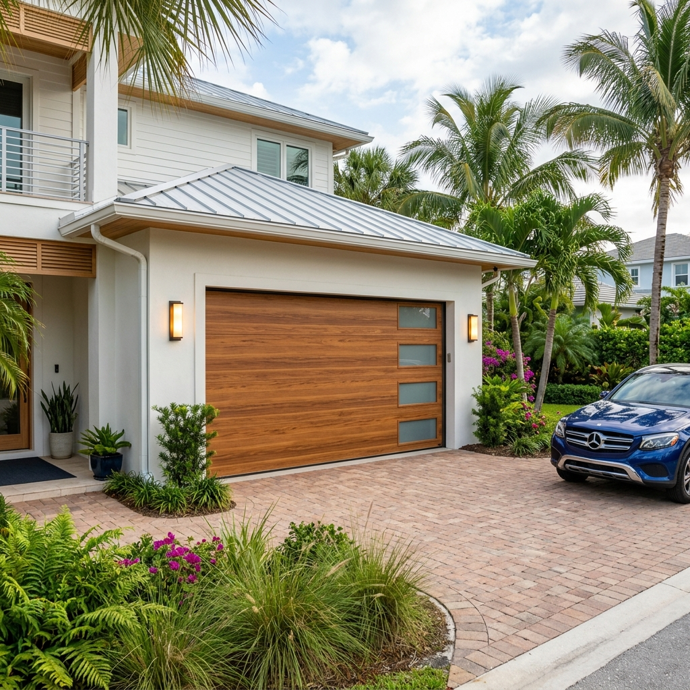
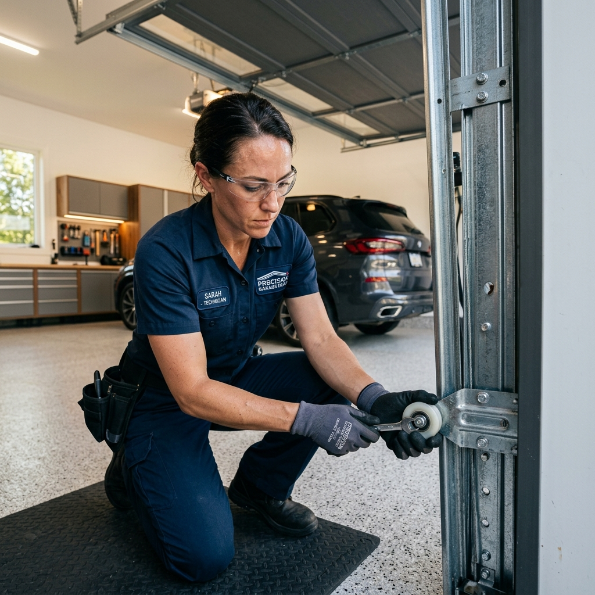
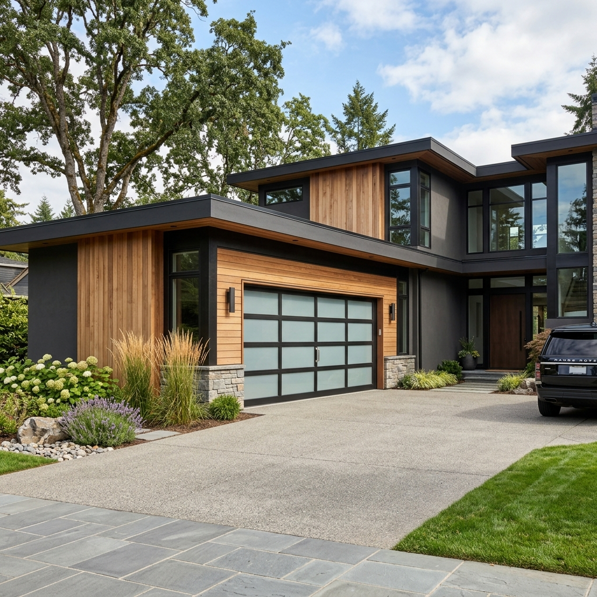
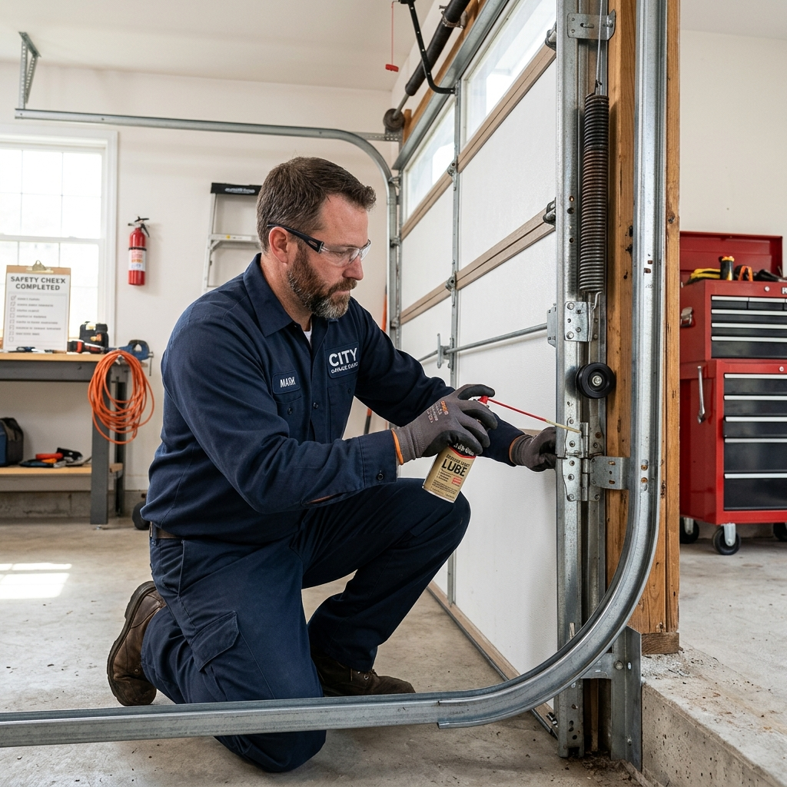
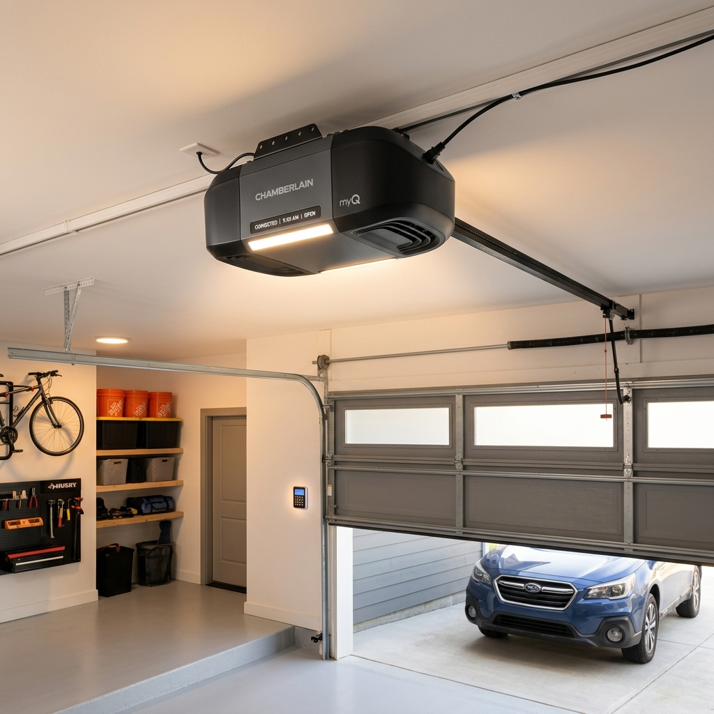
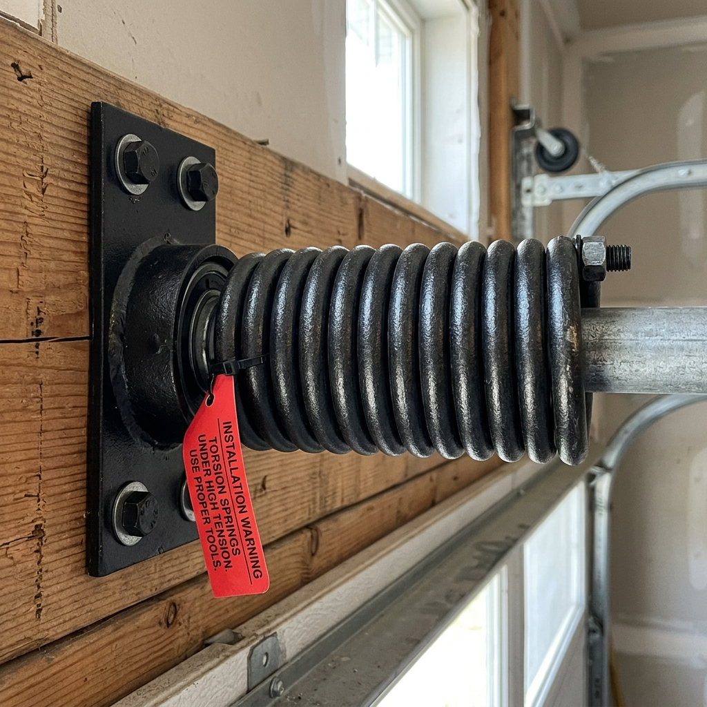
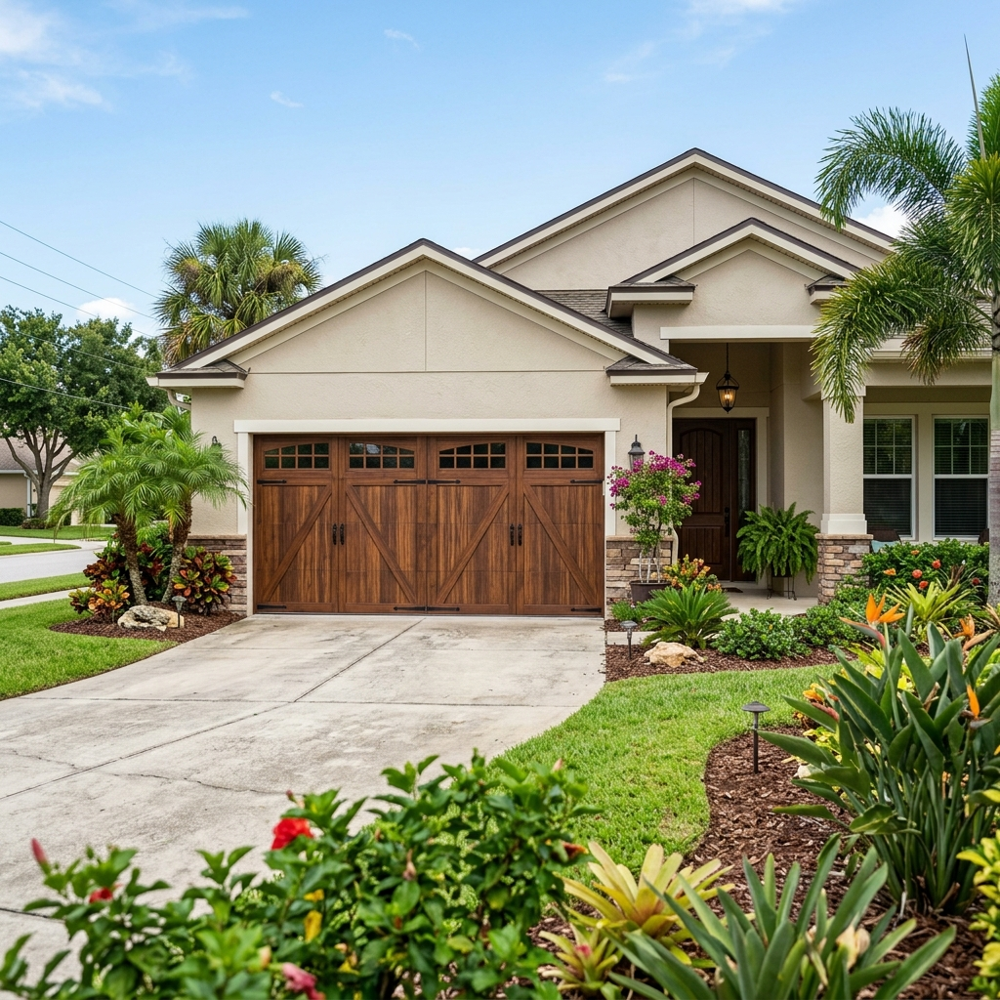
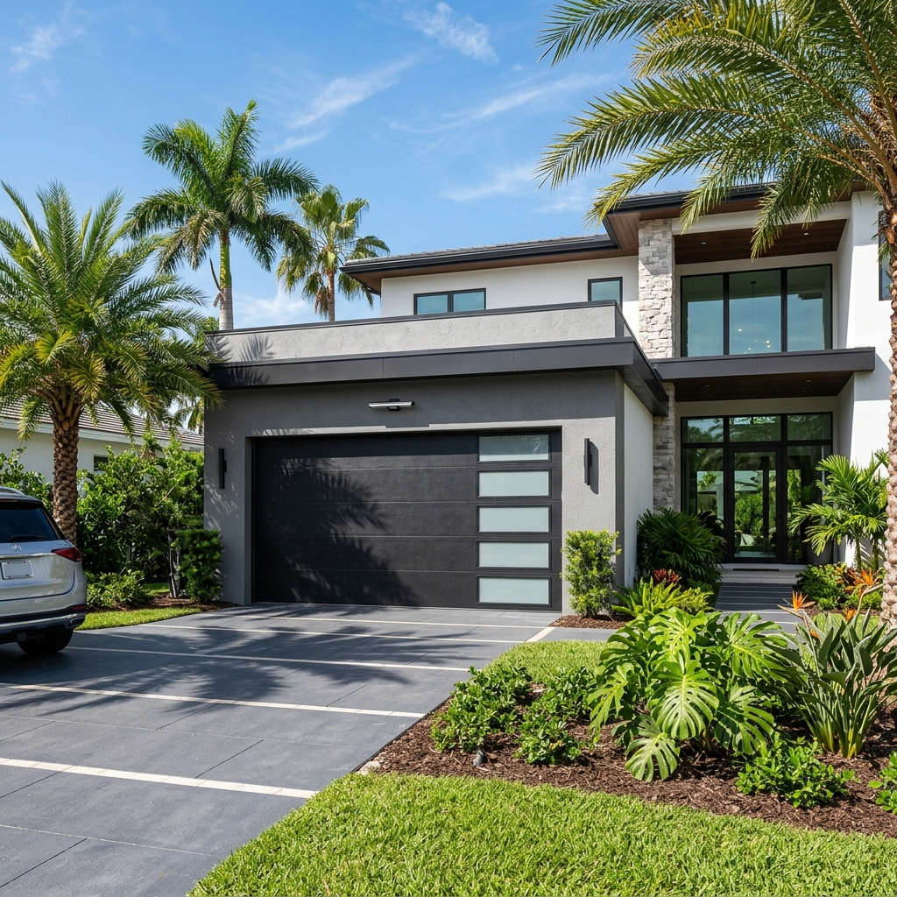
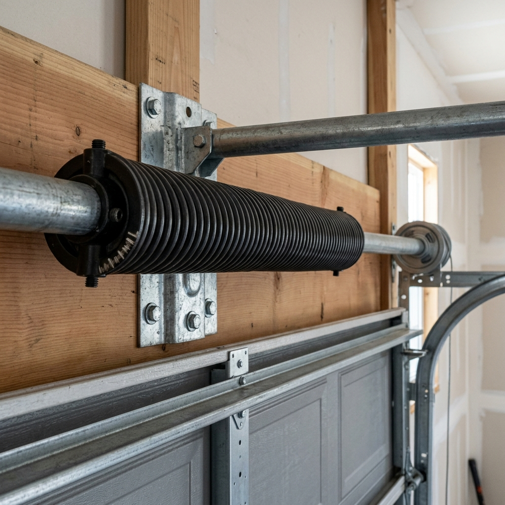
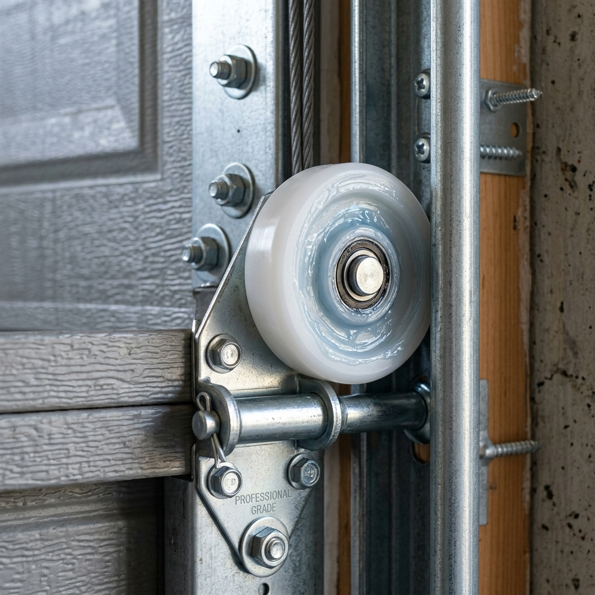

When you need reliable Garage Door Repair Boynton Beach, a door that won't open, won't close, or makes unusual noises is more than an inconvenience. It can affect your home's safety and everyday routine. We repair broken springs, damaged openers, worn rollers, off track doors, faulty sensors, and other common garage door problems to help restore smooth and reliable operation.
Available day & night for urgent garage door issues.
Certified local professionals (Lic #U-22485).
Honest pricing upfront with no hidden fees.
Fastest dispatch team in the Boynton Beach area.
Living near the coast means garage doors are exposed to humidity, salt air, heavy rain, and daily use, all of which can affect springs, rollers, cables, tracks, and other moving parts over time.
Homes around Ocean Avenue, Gateway Boulevard, and the neighborhoods near Boynton Harbor Marina often experience these conditions. In addition to residential homes, we also service Boynton Beach Garage Doors Entrance Gates. Our team repairs garage door problems, installs replacement parts when needed, and takes the time to explain what they find, so you have a clear understanding of your garage door before any work begins.

For reliable garage door repair boynton beach residents trust, problems can happen when springs, cables, rollers, tracks, or openers wear out or stop working properly. We identify the cause of the problem and provide the right repair or replacement to restore safe and smooth operation. Our Boynton Beach Garage Door Repair team handles all Garage Door Repairs Installation in Boynton Beach. Our services include garage door repair, installation, spring repair, opener repair, cable replacement, roller replacement, track repair, sensor repair, motor replacement, and routine maintenance for residential properties.

When you face a garage door issue or need a broken garage door fix, our team provides transparent repair options by diagnosing issues on-site. We specialize in quick repair and a quick fix to offer quick work and quick solutions through a professional technician or knowledgeable technician to restore safe operations.

Upgrade your property with a beautiful new garage door or a complete garage door replacement. We offer high-quality garage door system options and garage system upgrades, tailoring the garage door design to your home. Enjoy a smooth installation process and a seamless process from start to finish.

Protect your investment with yearly maintenance that includes deep lubrication of doors and moving parts. Our experts provide helpful maintenance tips, conduct a thorough inspection, and perform an initial inspection of all hardware to prevent unexpected failures and extend the life of your door.

We offer complete opener replacement or help you set up a new opener with a new motor installation. Whether you need standard garage door motor replacement, motor repair, or a quick motor change, we restore reliable entry and smart compatibility.

We provide emergency spring replacement for broken torsion springs and extension systems. As the leading Garage Door Spring Repair specialists in Boynton Beach, FL, we offer prompt Garage door spring repair in Boynton Beach, Florida to safely lift your door.
A snapped or frayed cable is a major safety hazard that can cause the door to fall. We perform immediate cable replacement and general cable repair to balance the door and keep it running smoothly on the track.
We combine high-quality parts, local expertise, and transparent service to deliver the best garage door repair experience in Boynton Beach.
We explain the problem, the recommended repair, and answer your questions before any work begins.
Small details matter. Every component is checked to help ensure your garage door operates smoothly.
We explain the available repair options so you can choose the solution that works best for your garage door.
From minor repairs to new garage door installations, we provide services for every stage of your garage door's life.
We take pride in our track record of serving the Boynton Beach community with quick response times and quality workmanship.
Get fast, accurate answers about garage door problems directly from our lead technician.

When your garage door malfunctions, it is more than just a minor inconvenience. It directly threatens your home's security and daily routine. As local experts, we specialize in both repair services and Expert Garage Door Installation in Boynton Beach FL. We solve real garage door problems in Boynton Beach immediately:
Whether you're dealing with a broken spring, a faulty opener, worn rollers, or planning a new garage door installation, we're ready to help. Reach out today to discuss your garage door needs and schedule a service visit.
Schedule Garage Door Service


Need immediate garage door service? Have a stuck vehicle or a crooked door? If you are looking for cheap garage door repair boynton beach residents can rely on for premium quality, send us a message or call our dispatch desk directly for 2-hour emergency response in Boynton Beach.
1200 S Federal Hwy, Boynton Beach, FL 33435
(561) 555-0190
service@boyntonbeachgaragedoors.com
Get Your Garage Door Fixed Today. Fill out the form below. A licensed local technician will contact you within 15 minutes to confirm your scheduling window.
Thank you. A technician is reviewing your request and will call you at the number provided within 15 minutes.